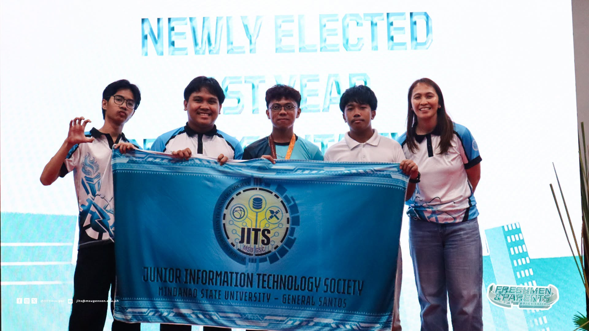
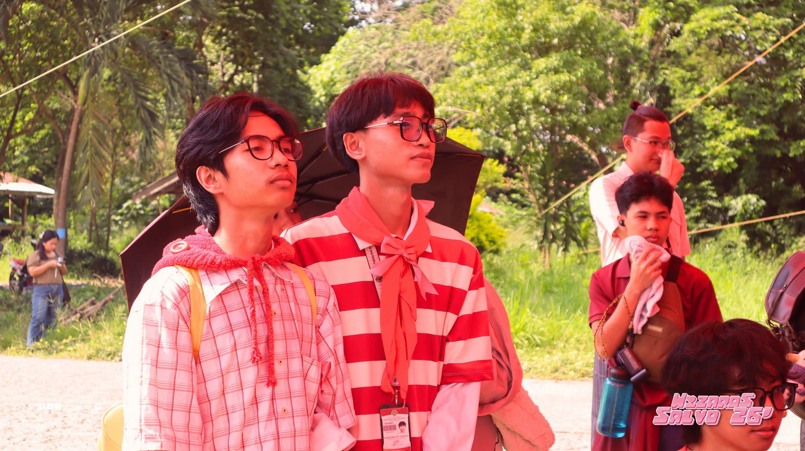

Founded in 2004, the Junior Information Technology Society (JITS) is the official student organization of the Bachelor of Science in Information Technology program at Mindanao State University – General Santos. Under the Department of Information Technology and Physics of the College of Natural Sciences and Mathematics, JITS represents IT students across year levels and specializations.
JITS was established to serve the needs of IT students and provide opportunities for them to grow both inside and outside the classroom. As students, we understand that learning Information Technology involves more than attending lectures and passing examinations. It also means developing practical skills, working with others, exploring new technologies, and preparing for the challenges of the IT industry.
Through its activities and programs, JITS aims to make student life more meaningful by supporting academic development, promoting student welfare, and encouraging participation in university activities. It also provides students with opportunities to develop leadership skills, share ideas, build connections, and contribute to the community.


WHAT WE DO
JITS works to support the academic and personal development of its constituents through various programs and activities. These include academic assistance, technical seminars, workshops, competitions, student welfare initiatives, sports and cultural activities, and community service projects.
The Society also serves as a channel through which students can raise concerns, share suggestions, and participate in decisions that affect their student experience. By working with the department, faculty members, and fellow students, JITS seeks to help address the needs of its constituents and improve the learning environment.
More than organizing events, JITS aims to build a community where students can learn from one another, discover their strengths, and take an active role in their department.